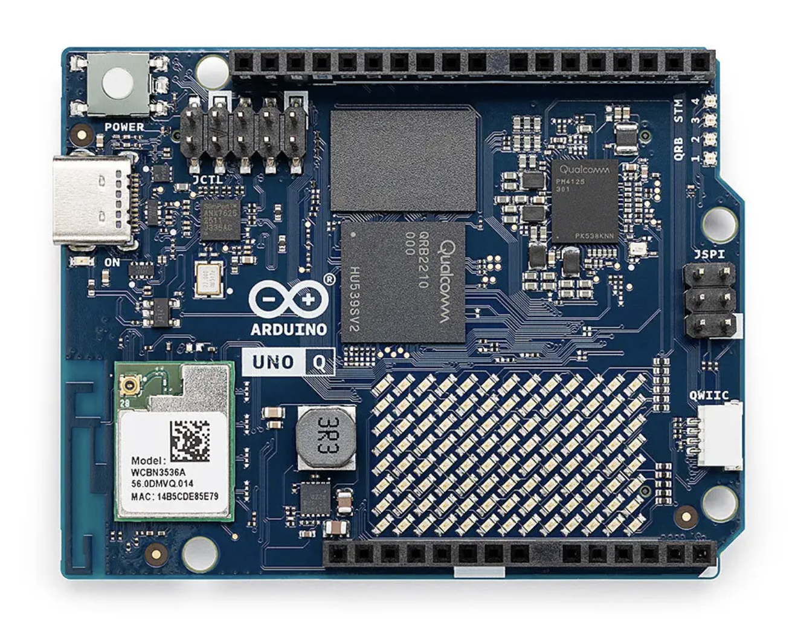
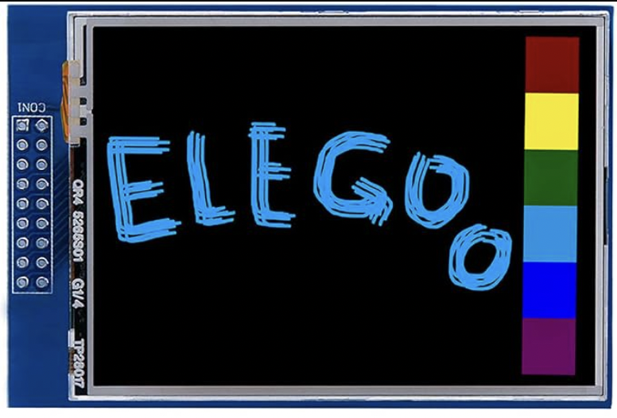

Arduino UNO Q
The UNO Q combines two processors on one UNO-form-factor board. A Qualcomm Dragonwing QRB2210
runs Debian Linux for application-level and multimedia workloads, while an STM32U585 runs Arduino
sketches under Zephyr for deterministic real-time I/O. Juno targets the STM32 microcontroller with its
Thumb-2 backend; it does not run generated Java programs on the Linux processor. The MCU facade is
the entry point for the board's peripherals, the same one the UNO R4 WiFi uses.

Core specification
| Characteristic | Linux side | Real-time side used by Juno |
|---|---|---|
| Processor | Qualcomm Dragonwing QRB2210 | STMicroelectronics STM32U585AIGT6 |
| CPU architecture | Quad-core Arm Cortex-A53 | 32-bit Arm Cortex-M33 with floating-point unit |
| Maximum CPU clock | 2.0 GHz | 160 MHz |
| Operating system | Debian Linux | Zephyr RTOS |
| Memory | 2 GB or 4 GB LPDDR4 | 786 kB SRAM |
| Non-volatile storage | 16 GB or 32 GB eMMC | 2 MB flash |
| Graphics | Adreno GPU | Not applicable |
| Wireless | Dual-band Wi-Fi 5 and Bluetooth 5.1 | Reached through the Linux side, not direct MCU radios |
| Arduino CLI FQBN | Not applicable | arduino:zephyr:unoq |
| Juno board id | Not applicable | arduino-uno-q |
The two processors communicate through Arduino's Bridge/RPC facilities: the Linux side handles networking and Bluetooth, and the MCU sketch reaches them through the bridge. The Arduino linker report is authoritative for a generated sketch's usable memory; its limits describe the Zephyr user-sketch partition, which is smaller than the STM32U585's complete flash and SRAM.
What Juno supports
| Feature | Status | Notes | Example |
|---|---|---|---|
Gpio, DigitalOutput |
✓ | Resolve D0–D13 and A0–A5 through the STM32's board-context Arduino GPIO mapping. |
Blink |
Delay, Clock, Serial |
✓ | Arduino/Zephyr timing and the MCU sketch's serial path. | |
Double-precision java.lang.Math |
✓ | MathFunctionsDoublePrecision |
|
Threads, synchronized, locks, StructuredTaskScope, ScopedValue |
✓ | VirtualThreads, StructuredConcurrency |
|
BigInteger, BigDecimal, MathContext |
✓ | ||
@Watchdog |
– | Not available: the Zephyr firmware does not enable its watchdog subsystem, so the compiler rejects @Watchdog for this board. |
|
UUID.randomUUID() |
✓ | Zephyr's cryptographic random service on the STM32U585's TRNG; no Linux, Wi-Fi or bridge involved. | |
| Onboard LED matrix | ✓ | 13 × 8 through the Zephyr core's Arduino_LED_Matrix; LedCanvas.width() is 13 here and 12 on the UNO R4 WiFi. |
LedMatrixScrollingText |
Wifi, Udp, SNTP |
✓ | Linux owns Wi-Fi; the MCU exchanges datagrams through Arduino_RouterBridge. |
SntpTimeSD |
HttpClient (HTTPS) |
✓ | TLS connections use BridgeTCPClient and the Linux system trust store. |
SingleHttpsGet |
HttpServer (HTTP and HTTPS) |
✓ | The TLS session runs on the MCU; the Linux side is already on the network. | QHttpsServer |
Smtp.sendTls, Pop3Client |
✓ | Email over implicit TLS. | EmailHelloWorldTFT |
Smtp.send (STARTTLS) |
– | Not supported yet. The Q's TLS client encrypts from the first byte and does not upgrade an open connection, so STARTTLS is not done. Planned: a TLS client on the MCU that upgrades the connection itself. Use Smtp.sendTls on port 465 until then. |
|
| Bluetooth LE (LEGO Powered Up) | ✓ | ArduinoBLE reaches the Linux side's Bluetooth adapter through the bridge; see LEGO. |
|
SdCard |
✓ | On a shield's microSD slot, such as the TFT Touch Shield's or the Data Logger Shield's. | SdFileOperations |
| LCD Keypad and TFT Touch shields | ✓ | Built on GPIO, timing and analog input; see Shields. |
Features
These need only the UNO Q and its USB-C cable.
Blink the built-in LED
DigitalOutput led = DigitalOutput.of(MCU.getGpio().getBuiltinLed());
while (true) {
led.high();
Delay.millis(500);
led.low();
Delay.millis(500);
}
Blink is the complete program; it builds for any board, so pass
-Djuno.board=arduino-uno-q.
Scroll text on the LED matrix
The UNO Q's matrix is 13 columns by 8 rows. LedCanvas draws into a frame and show sends it to the matrix:
LedMatrix matrix = MCU.getLedMatrix();
matrix.begin();
boolean[][] frame = new boolean[LedCanvas.HEIGHT][LedCanvas.MAX_WIDTH];
for (int offset = 12; offset >= -60; offset--) {
LedCanvas.clear(frame);
LedCanvas.drawText(frame, "Hello, Juno", offset, 0);
LedCanvas.show(frame);
Delay.millis(80);
}
drawText takes a compile-time string literal. LedMatrixScrollingText scrolls a longer
message forever.
Serve HTTPS
The Linux side is already on the network, so the program joins nothing: it starts a TLS listener on port 443 and
answers requests. The certificate and key are PEM text, read at startup from server.crt and server.key on the root
of the Data Logger Shield's microSD card, so neither is built into the program:
HttpServer.beginTls(443, certificate, certificateLength, key, keyLength);
byte[] body = new byte[64];
while (true) {
if (HttpServer.accept(body, body.length) >= 0) {
if (HttpServer.path().equals("/status")) {
HttpServer.respond(HttpStatus.OK, "text/plain", "online");
} else {
HttpServer.respond(HttpStatus.NOT_FOUND, "text/plain", "not found");
}
}
}
QHttpsServer is the complete program, including how to create the certificate with
openssl and test it with curl.
Shields
TFT Touch Shield

The ELEGOO 2.8" TFT touch shield is a 240 × 320 ILI9341 color display on an 8-bit parallel bus, with a resistive
touch panel and a microSD socket. Seat it directly on the UNO Q; it needs no extra Arduino library.
TftTouchShield draws through ParallelBus, a compiler intrinsic that writes a whole GPIO port per store through
Zephyr's raw port API, so pixels stream from the runtime instead of costing one digitalWrite per pin. The TFT Touch Shield
API, wiring and touch calibration are on the Arduino Shields page.
Features
Draw and read touch
TftTouchShield tft = new TftTouchShield();
tft.setRotation(TftTouchShield.LANDSCAPE);
tft.fillScreen(TftTouchShield.BLACK);
tft.setCursor(10, 10);
tft.setTextSize(2);
tft.setTextColor(TftTouchShield.YELLOW, TftTouchShield.BLACK);
tft.print("Hello, Juno");
while (true) {
if (tft.readTouch()) {
tft.fillCircle(tft.touchX(), tft.touchY(), 3, TftTouchShield.WHITE);
}
}
TouchPaintTFT is a finger-paint program with a color palette; it builds for any
board, so pass -Djuno.board=arduino-uno-q.
Read the SD card
The shield's microSD socket shares no pins with the display, so its card works alongside it, selected on D10:
SdCard sd = tft.getSdCard();
if (sd.begin()) {
// read or write files on the microSD card
}
WifiStatusSDTFT reads wifi.ssid and wifi.password from application.properties
on the shield's card and shows the connection status on the display.
Build and run
Install the Zephyr core and the Arduino_RouterBridge library once; every UNO Q program needs both:
arduino-cli core install arduino:zephyr
arduino-cli lib install Arduino_RouterBridge
Then compile and upload an example, for instance the virtual-threads demo:
./mvnw -f juno-examples/pom.xml compile juno:flash \
-Djuno.main=io.github.jabrena.juno.language.VirtualThreads \
-Djuno.board=arduino-uno-q
Open the serial monitor in another terminal:
./mvnw -f juno-examples/pom.xml juno:monitor \
-Djuno.board=arduino-uno-q
The monitor uses 115200 baud by default, matching Serial.begin(BaudRate.BAUD_115200).